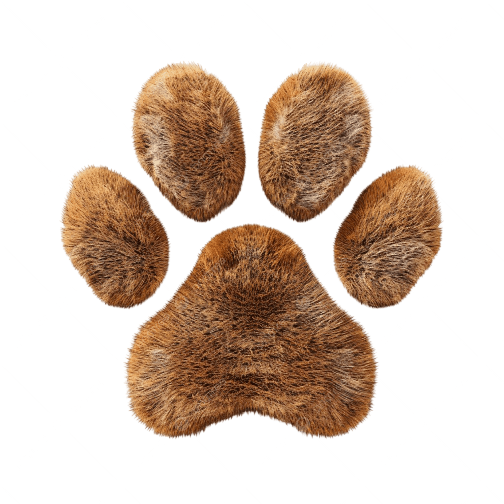
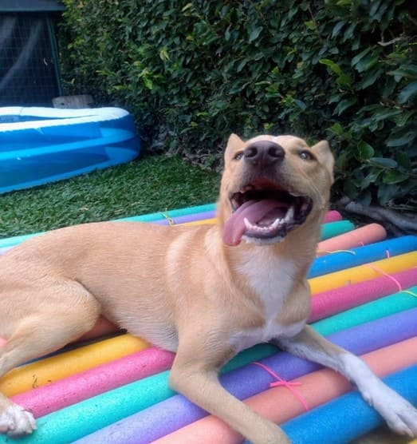
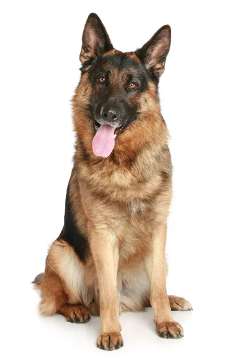

Resgate de Emergência
Equipe de plantão que atende chamados de moradores sobre animais feridos, doentes ou em risco na rua.
Status: Em andamento contínuo

A Patas & Lar é uma ONG que resgata animais em situação de rua, abandono, maus-tratos ou acidentes, oferecendo atendimento veterinário, recuperação e abrigo temporário até que cada um encontre uma família definitiva. Fundada em 2015, já resgatou mais de 800 animais e trabalha exclusivamente com doações e voluntários.
Resgate responsável · Cuidado veterinário · Adoção consciente · Educação sobre posse responsável
Equipe de plantão que atende chamados de moradores sobre animais feridos, doentes ou em risco na rua.
Status: Em andamento contínuo
Rede de voluntários que abrigam animais em recuperação em suas casas até estarem prontos para adoção, reduzindo a superlotação do abrigo físico.
Status: Em andamento
Eventos mensais em praças e parques da cidade para aproximar os animais resgatados de possíveis adotantes.
Status: Em andamento - próxima edição em outubro

Disponível para adoção
Disponível para adoção